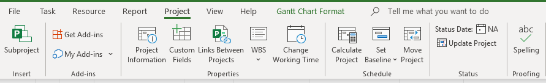
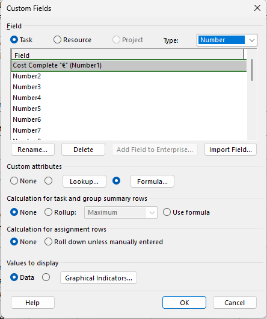
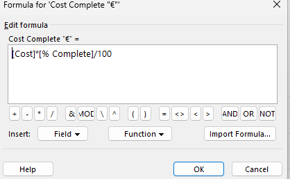
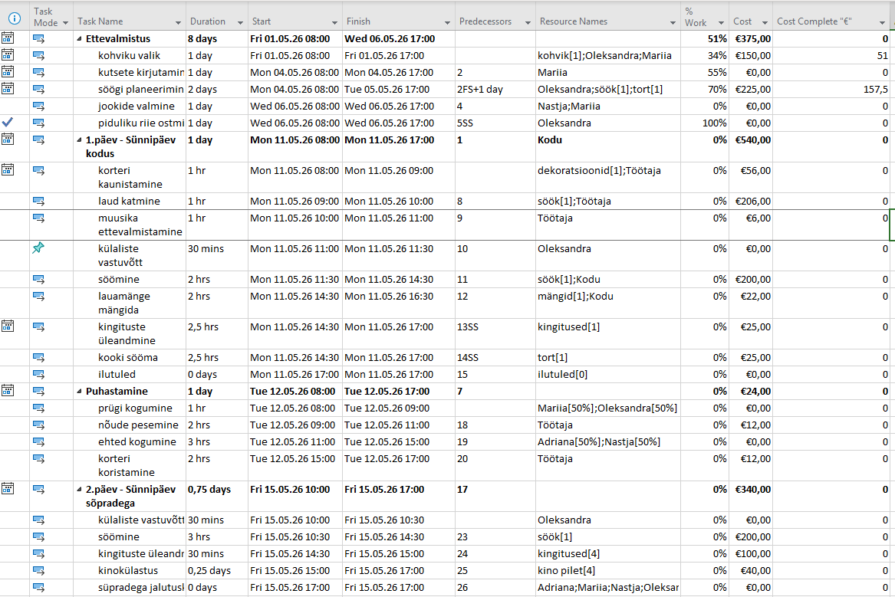

Mis on kohandatud väli MS Projectis?
Microsoft Project võimaldab luua kohandatud välju (Custom Fields), millele saab lisada valemeid. See on kasulik näiteks täidetud tööde maksumuse arvutamiseks automaatselt — kasutades olemasolevaid välju nagu Cost ja % Complete.
Samm 1 — Ava Custom Fields
Mine ülemisse menüüsse ja vali vahekaart Project. Klõpsa nuppu Custom Fields. See avab kohandatud väljade halduse akna.

Samm 2 — Vali välja tüüp ja nimi
Avaneb aken Custom Fields. Vali ülaosas Task ja muuda tüübiks Number. Valige loendist väli (nt Number1) ja klõpsa Rename, et anda sellele nimi (nt Cost Complete "€").

Samm 3 — Lisa valem
Jaotises Custom attributes vali Formula. Avaneb valemi redaktor. Sisesta valem:
[Cost]*[% Complete]/100
See valem arvutab automaatselt, kui suur osa ülesande eelarvest on juba täidetud, lähtudes lõpetamise protsendist. Vajuta OK.

Samm 4 — Tulemus Gantti tabelis
Pärast välja lisamist kuvatakse Gantti tabelis uus veerg Cost Complete "€". Veerg arvutab automaatselt iga ülesande jaoks täidetud maksumuse vastavalt lõpetamise protsendile ja kogumaksumusele.
